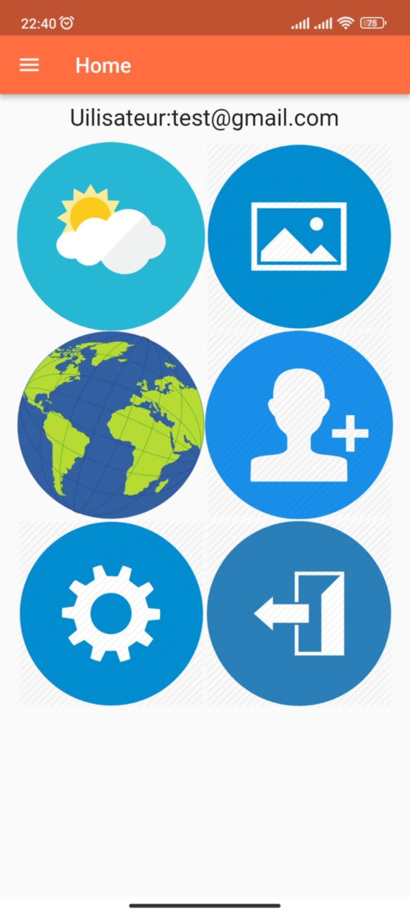
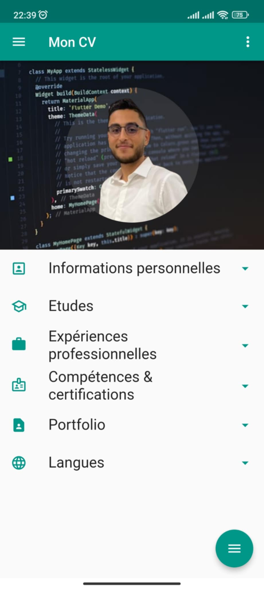
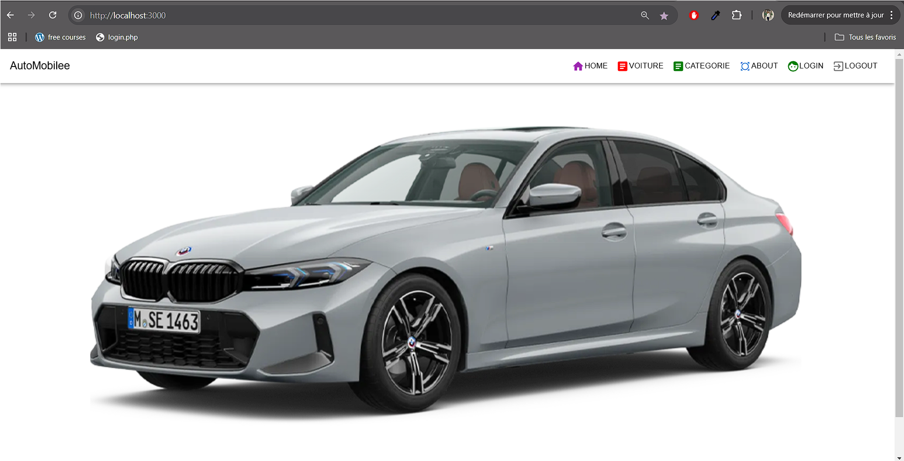
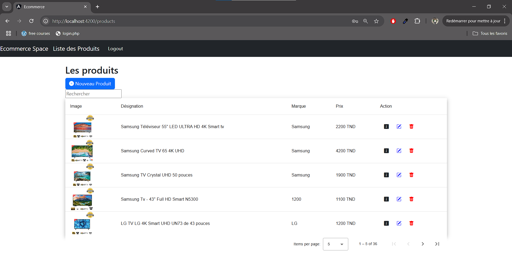

Matiére étudier
À l'Institut Supérieur des Études Technologiques de Sfax, j'ai eu l'opportunité d'étudier de nombreuses matières techniques qui m'ont permis de développer des compétences variées. Parmi les technologies abordées, on retrouve HTML, CSS, Django, Flutter, Angular, Next.js, et bien d'autres. Cette formation m'a permis d'acquérir une solide base en développement web et mobile, et de découvrir différents frameworks et langages, me préparant ainsi à relever divers défis techniques dans le domaine du développement logiciel.
1. Projet Flutter
À l'Institut Supérieur des Études Technologiques de Sfax, j'ai étudié la matière Flutter, à travers laquelle j'ai réalisé plusieurs projets pratiques. L'un de ces projets consistait à développer une application permettant d'afficher les données des métiers en temps réel en utilisant des API, tandis qu'un autre projet portait sur la création d'un CV interactif, permettant de consulter des informations personnelles, des compétences et des expériences professionnelles. Ces projets m'ont permis de renforcer mes compétences en développement mobile avec Flutter et d'explorer l'intégration d'API pour des applications dynamiques.
 2. Projet Next Js
À l'Institut Supérieur des Études Technologiques de Sfax, j'ai étudié les matières Next.js et Node.js, que j'ai utilisées pour développer un projet de gestion d'un showroom de voitures. Dans ce projet, j'ai exploité Node.js pour le back-end, assurant la gestion des données et des API, et Next.js pour le front-end, permettant de créer une interface utilisateur dynamique et performante. Cette expérience m'a permis d'approfondir mes connaissances en développement full-stack, en combinant les puissantes fonctionnalités de ces deux technologies.
3. Projet Angular
À l'Institut Supérieur des Études Technologiques de Sfax, j'ai étudié les matières Angular et Node.js , que j'ai utilisées pour développer un projet d'e-commerce dédié à la vente de produits électroniques. Dans ce projet, j'ai utilisé Node.js pour le back-end, afin de gérer les données, les utilisateurs et les transactions, tandis que Angular a été utilisé pour le front-end, créant une interface utilisateur réactive et fluide. Cette expérience m'a permis de renforcer mes compétences en développement full-stack, en intégrant ces deux technologies pour réaliser une application web performante.
4. Projet Django
À l'Institut Supérieur des Études Technologiques de Sfax, j'ai étudié la matière Django, une technologie qui permet de gérer à la fois le front-end et le back-end d'une application. Dans le cadre de ce projet, j'ai utilisé Django pour développer un site e-commerce dédié à la vente de produits de vêtements, en intégrant la gestion des utilisateurs, des produits et des commandes. Cette expérience m'a permis de maîtriser le développement full-stack avec Django, en combinant la gestion des données et la création d'une interface utilisateur intuitive au sein d'une même plateforme.
5. Porjet Spring Boot
À l'Institut Supérieur des Études Technologiques de Sfax, j'ai étudié les matières Angular et Spring Boot, que j'ai utilisées pour développer un projet d'e-commerce. Dans ce projet, Spring Boot a été utilisé pour le back-end, assurant la gestion des données, des utilisateurs et des transactions, tandis que Angular a été utilisé pour le front-end, offrant une interface utilisateur dynamique et réactive. Cette expérience m'a permis de renforcer mes compétences en développement full-stack, en combinant les capacités puissantes de ces deux technologies pour créer une application web performante et fonctionnelle.